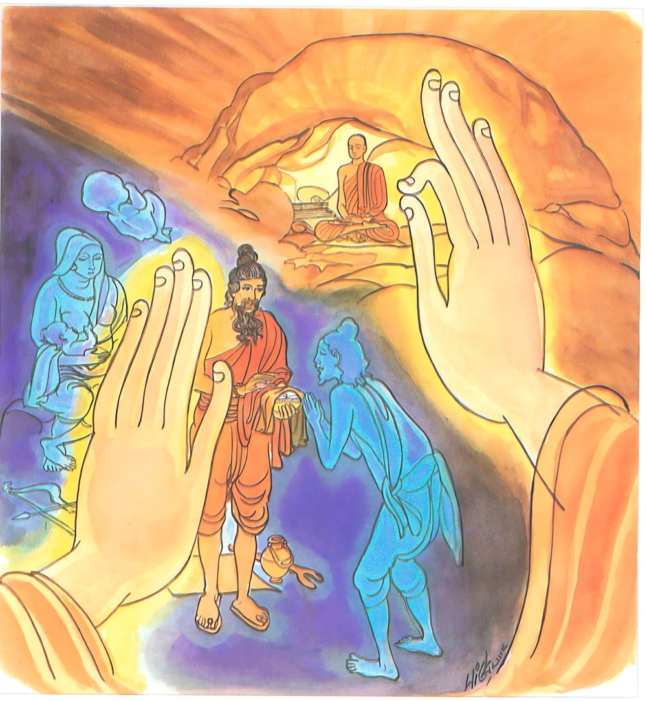

26-13 තමා බමුණු යි සිතූ බමුණෙක්
මෙම කතාව ධම්මපද අටුවාවෙන් ද කියවන්න.
න චාහං බ්රාහ්මණං බ්රූමි යොනිජං මත්තිසම්භවං
භොවාදී නාම සො හොති සචෙ හොති සකිඤ්චනො
අකිඤ්චනං අනාදානං තමහං බ්රූමි බ්රාහ්මණං.
මවගේ යෝනි මගින් උපන්, බැමිණියක කුස උපන්නාහට එ පමණෙකින් බ්රාහ්මණ යැ යි මම් නො කියමි. ඉදින් යමෙක් ක්ලේශපරිබෝධ ඇත්තේ වී නම්, හේ (දුටු දුටුවන්ට ‘භො භො’යී කියා ඇවිදුනා හෙයින්) භොවාදී නම් වෙයි (බ්රාහ්මණ නම් නො වෙයි). ක්ලේශපරිබෝධ නැති තෘෂ්ණාදෘෂ්ටි වශයෙන් කිසිත් නොගන්නා තැනැත්තහු බ්රාහ්මණ නමැ යි මම් කියමි.

“ශ්රමණ ගෞතම තෙමේ තම ශ්රාවකයන් බ්රාහ්මණයන් කොට පිරිස්මැද කියා පාන්නේ ය, මම ද උපන්මි බ්රාහ්මණයෝනියෙහි ම ය, එහෙයින් මා ද බ්රාහ්මණ කොට කියන්නට වටී ය”යි සිතා ගත් එක්තර බමුණෙක් බුදුරජුන් වෙත එළැඹැ “මා බමුණු කොට නො කියන්නට ඇති කරුණු කිමැ?”යි අසා සිටියේ ය. ඉක්බිති බුදුරජානන් වහන්සේ “මම, යමකු බ්රාහ්මණයෝනියෙහි උපන් පමණින් බ්රාහ්මණැ යි නො කියමි, යමෙක් රාග ද්වේෂ මෝහාදී වූ කෙලෙස් නැත්තේ නම්, උපාදාන විසින් දැඩි ගැණීම් නැත්තේ නම්, පව් නැත්තේ නම්, මම ඔහු බ්රාහ්මණැ යි කියමි” යි වදාරා මේ ධර්මදේශනාව කළ සේක.
න චාහං බ්රාහ්මණං බ්රෑමි යොනිජං මත්තිසම්භවං,
භොවාදී නාම සො හොති සචෙ හොති සකිඤ්චනො,
අකිඤ්චනං අනාදානං තමහං බ්රෑමි බ්රාහ්මණන්ති.
මම යෝනිමාර්ගයෙන් උපන්, බැමිණි මවක ගේ කුස හට ගත්තකු බමුණු යි නො කියමි. ඉදින් හෙතෙමේ පළිබෝධ සහිත වේ නම් භොවාදී නම් වේ. පළිබෝධ නැති දැඩි ගැණීම් නැති ඔහු, මම බමුණු යි කියමි.
න ච අහං බ්රාහ්මණං බ්රෑමි යොනිජං මත්තිසම්භවං = මම යෝනියෙන් උපන් බ්රාහ්මණ ජාතික මවකගේ කුස උපන්නකු බමුණු යි නො කියමි.
යොනිජ නම්: මවගේ යෝනිමාර්ගයෙන් උපන්නේ ය. මෙහි ‘යොනි’යි කීයේ ස්ත්රීලක්ෂණය යි. [1] ‘මත්තිසම්භව’ නම්: බැමිණි මවකගේ කුස උපන්නේ ය.
භොවාදී නාම සො හොති සචෙ හොති සකිඤ්චනො = ඉදින් හෙ තෙමේ පළිබෝධ සහිත වේ නම් ‘භොවාදි’ නම් වේ.
‘භොවාදි’ යන මෙහා ‘භො’ යනු ආලපනාර්ත්ථයෙහි නිපාතයෙකි. බ්රාහ්මණ ජාතිකයකු කවුරුන් හෝ තමාට මුණ ගැසුනු කල්හි ඔවුනට ‘භො භො’ යි අමතන්නෝ ය. මේ ඇමතීම බ්රාහ්මණ ජාතිකයන්ගේ ජාතික සම්ප්රදායයෙකි. එහෙයින් බමුණෝ ‘භොවාදි’ නම් වූහ. “භොති බ්රාහ්මණජාතිකානං ජාතිසමුදාගතං ආලපනං” යනු අටුවා. තවද, ‘සුභාසුභකථනන්ථං භො හොති වචනං වදති සීලෙනාති = භොවාදි” යනු ද මෙහිලා දත යුතු ය. ‘භො’ යනු එකවචන බහුවචන දෙක්හි සාධාරණ විසින් යෙදෙන්නේ ය.
‘සකිඤ්චන’ නම්: පළිබෝධ සහිත් වූයේ ය. “රාගො කිඤ්චනං” යනාදි ලෙසින් වදාළ රාග ද්වේෂ මෝහයේ කිඤ්චනයෝ ය. [2]
අකිඤ්චනං අනාදානං තං අහං බ්රෑමි බ්රාහ්මණං = පළිබෝධ නැති දැඩි ගැණුම් නැති ඔහු, මම බමුණු යි කියමි.
‘අකිඤ්චන’ නම්: රාගද්වේෂාදි කිඤ්චන නැතියේ ය. ‘අනාදාන’ නම්: තෘෂ්ණ දෘෂ්ටි ආදි උපාදාන නැතියේ ය.
බැමිණියකගේ කුස පිළිසිඳගෙණ බැමිණියකගේ යෝනිමාර්ගයෙන් බිහිවූවෙක් එ පමණින් බ්රාහ්මණ නම් නො වේ. ජාති විසින් බ්රාහ්මණ වූ හෙතෙමේ පළිබෝධ සහිත නම් භොවාදී නම් වේ. අර්ත්ථ විසින් බ්රාහ්මණ නො වේ. රාගාදි පළිබෝධ හා කාමූපාදානාදිය නැත්තේ ම බ්රාහ්මණ වේ.
ධර්මදේශනාවගේ අවසානයෙහි ඒ බ්රාහ්මණ තෙමේ සෝවන් ඵලයෙහි පිහිටියේ ය. ධර්මදේශනා තොමෝ පැමිණ සිටි පිරිසට ද වැඩ සහිත වූ ය.
අන්යතර බ්රාහ්මණ වස්තුව නිමි.